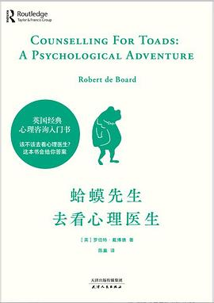
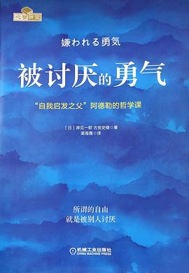
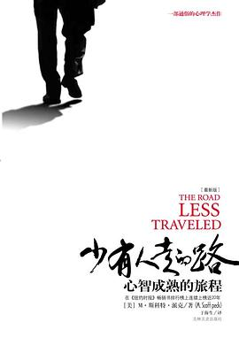

《蛤蟆先生去看心理医生》
这本书以童话的形式，讲述了蛤蟆先生接受心理咨询的过程。通过蛤蟆先生和心理咨询师苍鹭的对话，读者可以了解到心理咨询的基本流程和方法，以及如何应对生活中的各种心理问题。
购买链接

《被讨厌的勇气》
该书基于阿德勒心理学，探讨了如何摆脱他人的期待，勇敢地做自己。它告诉我们，要学会接受自己的不完美，拥有被别人讨厌的勇气，才能获得真正的自由和幸福。
购买链接

《少有人走的路》
这是一本关于心灵成长的书籍，作者从自律、爱、成长与信仰、恩典四个方面，深入探讨了如何面对人生的苦难和挑战，实现自我成长和心智成熟。
购买链接